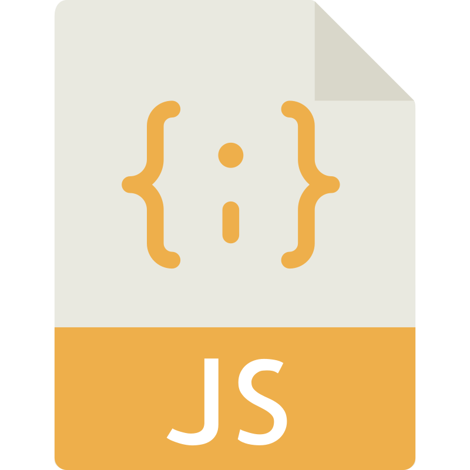
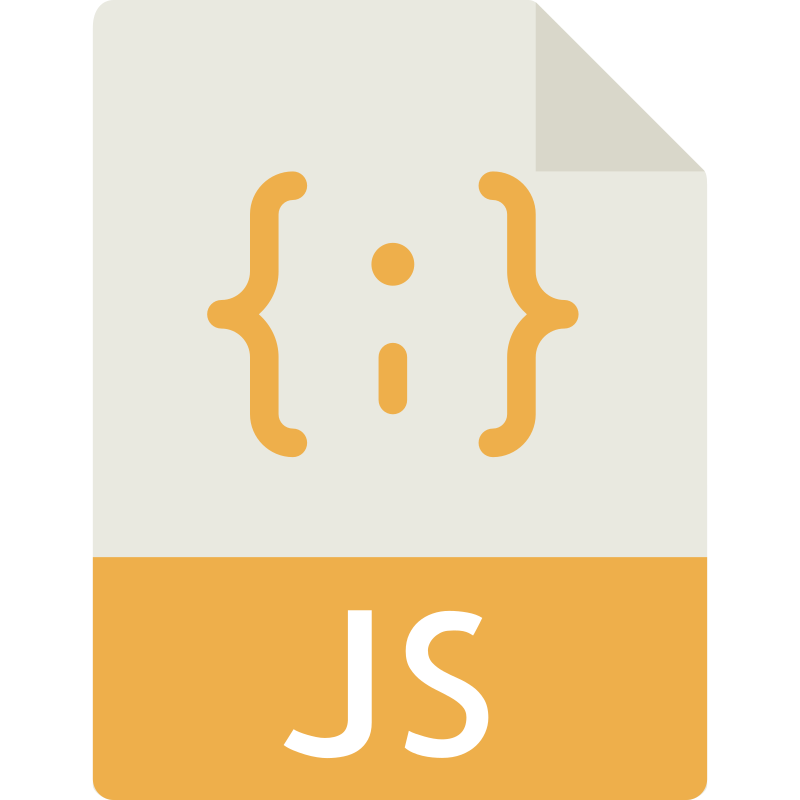

Description
For my major university project, I developed an innovative, scalable eLearning platform designed to integrate seamlessly with existing business infrastructures. Built using the .NET framework with C# for backend development and SQL for retrieving, processing, and storing data into an existing database, the system was created to ease the transition for businesses already using eLearning by allowing full integration of their current employee databases. The platform leverages the LLaMA 3.1 8B Large Language Model, applying parameters such as an employee’s role, industry, and experience level to dynamically generate real-world scenarios and adaptive, AI-driven assessments tailored to specific job functions. This ensures highly relevant, engaging learning experiences that improve both knowledge retention and practical application. Designed with enterprise flexibility and scalability in mind, the platform supports diverse organisational structures and training workflows, making it suitable for both independent businesses and large enterprises seeking a more intelligent and personalised approach to workforce development.
Technologies


Description
A management tool was created for a local veterinary practice, identifying the key requirements and functionalities needed for the program. This included tracking employee schedules, managing shift changes, and assigning tasks. I used C# in the .NET framework for the front-end development, providing a user-friendly interface and easy navigation for employees and managers. For the backend, I used SQL to manage the database and retrieve specific scheduling information, designing a schema to include tables for employees and shifts. The program connected to a backend relational database to store and manage all necessary information, including employee details, shift schedules, task assignments, and rota information. Overall, the use of technologies such as C# and SQL in the .NET framework enabled the creation of a comprehensive management tool for employee shifts and rota information, streamlining scheduling processes and improving overall efficiency.
Technologies

 
